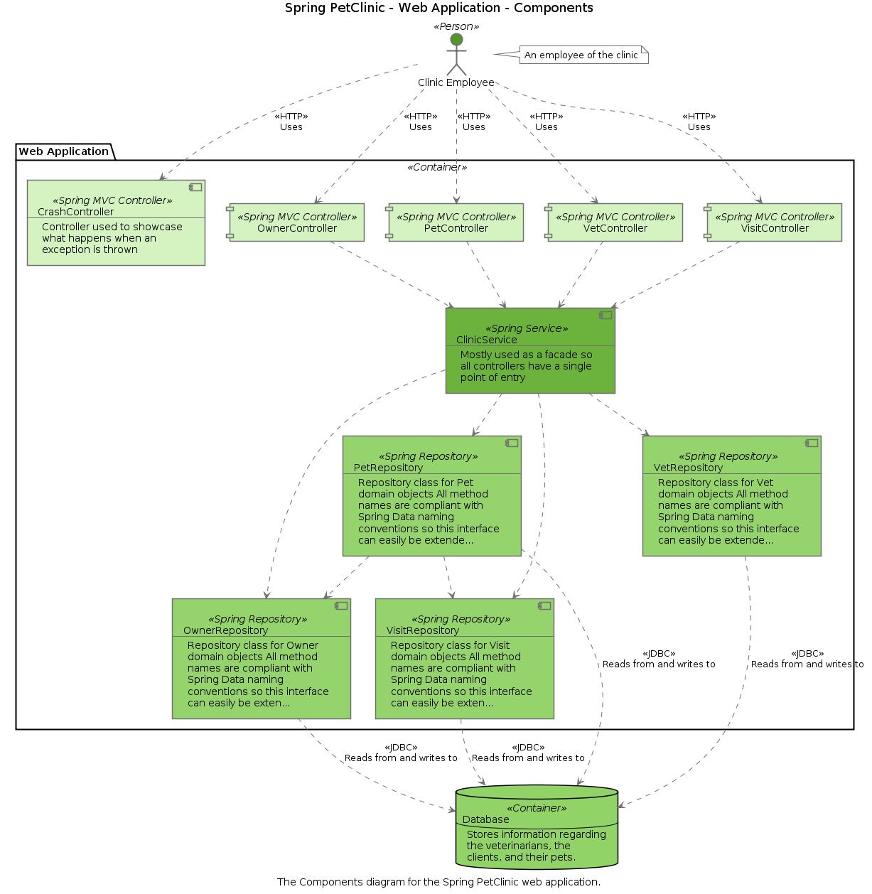
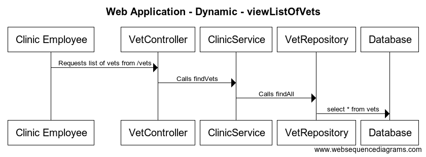

An architecture description language
There has been a trend over the past few years towards text-based tooling, with the most popular examples including PlantUML, WebSequenceDiagrams and Mermaid. With these tools, the diagram source is provided as text using a special domain-specific language, which the tool then visualises, typically with an automatic layout algorithm.
These tools generally have a low barrier to entry, and the source text is easily version controlled. Also, it's relatively straightforward to automate the use of these tools in order to generate diagrams and documentation during your build process.
However, each diagram needs to be defined separately, typically in a separate text file. If you have the same element on two diagrams, and you want to change the name of that element, you need to make sure that you change the name everywhere it's used. The global search and replace features in most developer tooling does make this less of a problem, but it's just one way that a collection of diagrams can easily become inconsistent if not managed properly.
To solve this problem, we can create a model (with multiple views) as text instead. For example, using the Structurizr DSL:
workspace "Getting Started" "This is a model of my software system." {
model {
user = person "User" "A user of my software system."
softwareSystem = softwareSystem "Software System" "My software system."
user -> softwareSystem "Uses"
}
views {
systemContext softwareSystem "SystemContext" "An example of a System Context diagram." {
include *
autoLayout
}
styles {
element "Software System" {
background #1168bd
color #ffffff
}
element "Person" {
shape person
background #08427b
color #ffffff
}
}
}
}This definition creates a model containing elements and relationships, creates a single view, and adds some styling. This can be published to the Structurizr cloud service via the JSON-based web API using the structurizr-cli tool. Here's the resulting diagram when you open it in Structurizr, where the layout of the diagrams can be modified.

The real power of creating models as text is starts to become evident when you create more than a single view inside the same textual definition. Rather than copying and pasting elements to reuse them across multiple diagrams, a model-based approach lets you reuse an element across multiple views (diagrams). The result is that diagrams stay in sync when you rename elements.
Benefits of using text to create software architecture models
Rather than argue over which diagramming tool you're going to use, why not use them all? A huge benefit of creating software architecture models as text is that you can visualise the views in that model using multiple output formats. For example, here are four versions of the same view (a C4 model container diagram), each created from the same text, and rendered in different diagramming tools.

Graphviz
PlantUML
You can also do the same with diagrams showing collaboration. Again, these were all generated from the same text, and rendered with different diagramming tools.
PlantUML
WebSequenceDiagrams
In summary, the benefits of using text to create software architecture models include:
- Multiple output formats: Rather than being locked into a single tool, creating your model as text provides a way to export your views to multiple formats.
- Versionable: Since the models are text, they are also versionable alongside your codebase in your version control system.
- Living documentation: The text to generate the model can be integrated with your automated build system to keep your models up to date; providing accurate, up-to-date, living software architecture diagrams that actually reflect the code.
Trade-offs of using text to create software architecture models
Like any approach or tool, using text to create software architecture models is not a perfect solution, and there are a few trade-offs to be aware of:
- Least common denominator: The trade-off with multiple output formats is that you take a "least common denominator" approach when defining your diagrams. This makes it harder to use features that are not supported by all of the rendering tools; such as different relationship types on UML diagrams (aggregation vs composition), or lifeline start and end on UML sequence diagrams. Arguably, few teams seem to use such features, but it's still worth bearing in mind.
Only you can decide whether the trade-offs are appropriate for your use cases.
Implementations
The following implementations support the core concepts of the C4 model, and are compatible with the web API used by the Structurizr cloud service and on-premises installation, via an intermediary JSON format. Some client library implementations also provide support for other diagram output formats. All are open source.
| Library | Input formats (create models using) |
Output formats (render diagrams using) |
|---|---|---|
| Structurizr DSL | Text-based domain specific language |
Structurizr cloud service and on-premises installation
Workspaces can also be exported to PlantUML and WebSequenceDiagrams using the Structurizr CLI. |
| Arch as code | YAML |
Structurizr cloud service and on-premises installation
Workspaces can also be exported to PlantUML and WebSequenceDiagrams using the Structurizr CLI. |
See the GitHub repos linked above for getting started guides and examples.